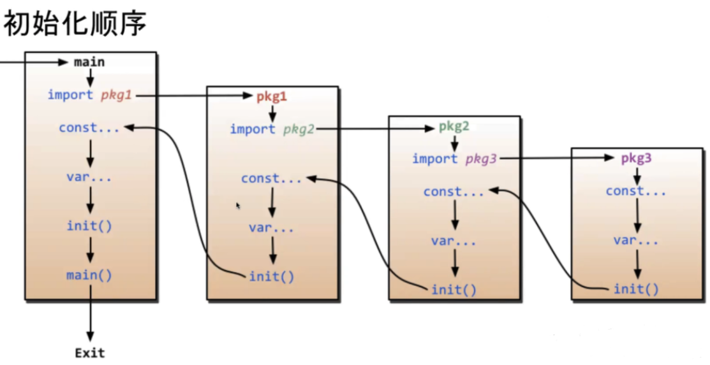

CHAPTER 06
六、函数
Go
func 函数名(参数列表) (返回值列表) {
// 函数体
}1. 参数和返回值
（1）支持多返回值：
Go
func divide(a, b int) (int, error) {
if b == 0 {
return 0, fmt.Errorf("除数不能为 0")
}
return a / b, nil
}（2）命名返回值：
Go
func calc(a, b int) (sum int, sub int) {
sum = a + b // 直接赋值，不需要写 var sum int
sub = a - b
return // 裸返回（Bare Return）
}（3）可变参数：
Go
func sumAll(nums ...int) int {
total := 0
for _, n := range nums {
total += n
}
return total
}
sumAll(1, 2, 3)
sumAll(1, 2, 3, 4, 5)调用时非常自由：sumAll(1.2.3) 或者sumAll(1.2.3.4.5)
2. 参数传递
只有值拷贝，传指针是将指针存储着的地址复制给函数内部局部指针变量，再对局部指针变量操作。
传切片，因为data指针指向同一数组，所以修改数据会跟着变。但是如果append触发扩容，内部data指针变，老的切片不知情，因此看不到追加的数据。
3. 匿名函数，做临时逻辑
Go
fn := func(a, b int) int {
return a + b
}
fmt.Println(fn(1, 2))4. 高阶函数
（1）函数做参数
Go
func Filter(orders []int, check func(int) bool) []int {
var result []int
for _, amount := range orders {
if check(amount) {
result = append(result, amount)
}
}
return result
}Go
largeOrders := Filter(orders, func(amount int) bool {
return amount > 100
})
fmt.Println("大于100的订单：", largeOrders) // [120 200]（2）函数做返回值
Go
func MakeLogger(prefix string) func(string) {
return func(message string) {
fmt.Printf("%s: %s\n", prefix, message)
}
}
func main() {
infoLog := MakeLogger("[INFO]")
errorLog := MakeLogger("[ERROR]")
infoLog("服务器已成功启动")
errorLog("数据库连接超时！")
}中间件：函数做参数和返回值
（3）函数做Map的value 表驱动法
Go
fmt.Print("请输入要执行的操作：\n1：登录\n2：个人中心\n3：注销")
var num int
fmt.Scan(&num)
var funcMap = map[int]func(){
1: func() { fmt.Println("登录") },
2: func() { fmt.Println("个人中心") },
3: func() { fmt.Println("注销") },
}
if fn, exists := funcMap[num]; exists {
fn()
} else {
fmt.Println("警告：输入的指令不存在，请输入 1-3 之间的数字！")
}5. 闭包
匿名函数引用了外面的局部变量，就组成了闭包
Go
func incr() func() int {
x := 0
return func() int {
x++
return x
}
}Go
fn := incr()
fmt.Println(fn())// 输出 1
fmt.Println(fn())// 输出 26. init函数
无参无返，不能手动调用，在main函数执行前自动调用。

7. defer延迟调用函数
写在函数中，延迟在函数退出前执行，可以用来做资源清理，防止内存泄漏
Go
defer file.Close()